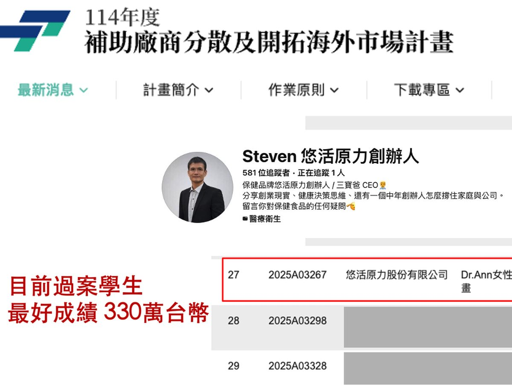
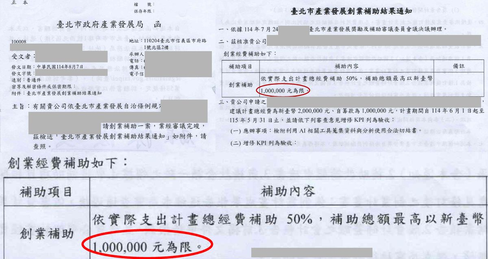
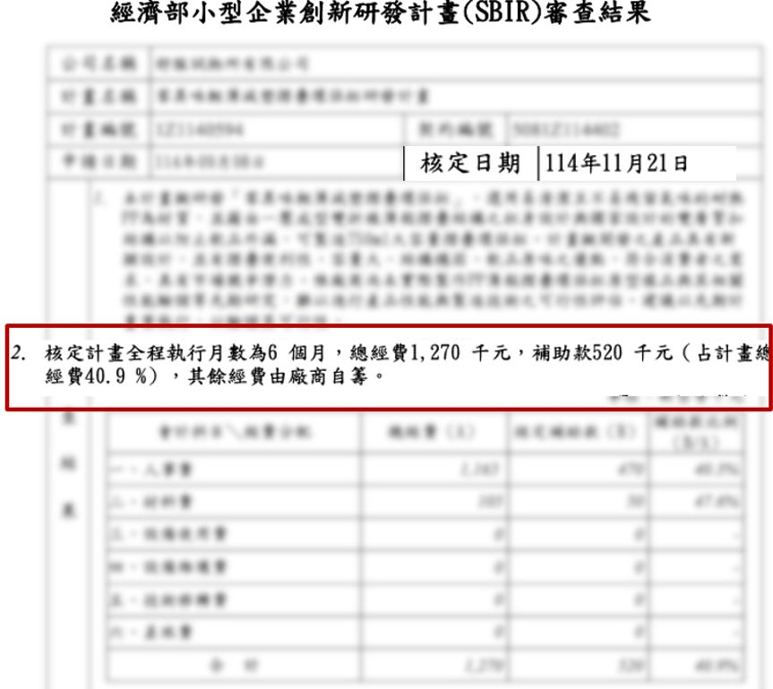
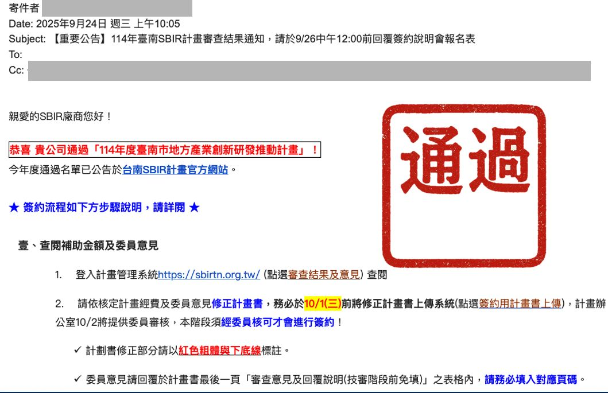
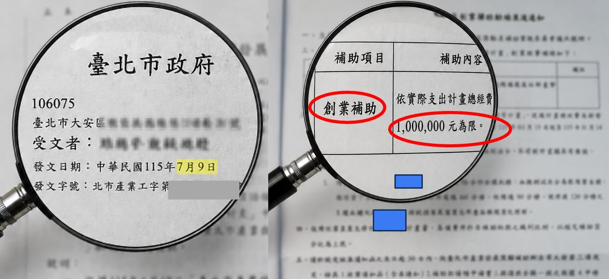
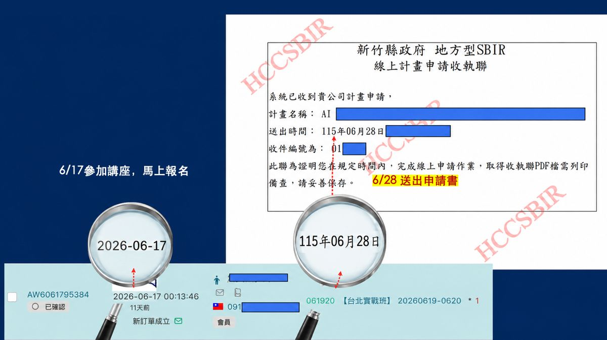

真正的見證，
不是影片，也不是照片
而是政府蓋章的核准函。
拍幾支感謝影片、擺幾張上課合照，那證明不了什麼。
能證明一套方法有沒有用的，只有一件事——學員有沒有真的把計畫書寫出來、送出去、然後拿到那張核准公文。
以下每一份，都是學員實際收到的官方文件（均已去識別化保護隱私）。
學員的核准公文牆
不同縣市、不同產業、不同補助案——同一套方法。每一份都標註了實際核定金額與期間，你可以自己核對。

🔍 點擊放大114 年度補助廠商分散及開拓海外市場計畫
核定名單在列
學員悠活原力股份有限公司（創辦人 Steven）通過經濟部國際貿易署補助，核定 330 萬元，是目前學員單筆最高的過案金額。核定名單由主管機關公開公告，可自行查證。

🔍 點擊放大臺北市產業發展創業補助
核准函
計畫總經費 200 萬，依實際支出補助 50%，補助總額上限 100 萬元，執行期間 114/6/1–115/5/31。

🔍 點擊放大經濟部小型企業創新研發計畫
審查結果通知
核定執行 6 個月，總經費 127 萬，補助款 52 萬元（佔計畫總經費 40.9%），核定日 114/11/21。

🔍 點擊放大114 年度臺南市地方產業
創新研發推動計畫
計畫辦公室官方通知信：「恭喜 貴公司通過」，通過名單並已公告於台南 SBIR 官方網站，可公開查證。

🔍 點擊放大臺北市政府函
創業補助核准
115/7/9 正式發文核准，依實際支出補助 50%，補助總額上限 100 萬元。

從「來上課」到「已送件」
只花了 11 天
6/17 報名參加講座。
6/28 新竹縣政府地方型 SBIR 線上申請系統，回傳收執聯——申請書已完成送出。
這才是最難的部分。大多數人不是敗在寫不好，是拖到截止日還沒寫完，最後根本沒送出去。
這些公文，實際證明了三件事
方法可複製
台北、台南、新竹、中央部會；文創、連鎖、設計、新創產品。不同縣市、不同產業、不同補助案，走的是同一套框架。
速度是關鍵
11 天從報名到送件。補助案有截止日，寫得再好，沒在期限內送出去就是零分。
政府認定，不是自己說
每一份都是機關正式函文或審查結果通知，有發文日期、核定金額、執行期間。不是感想，是憑證。